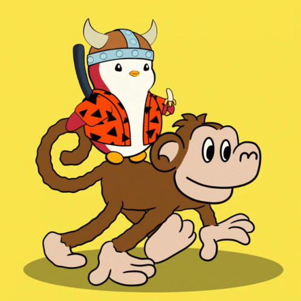
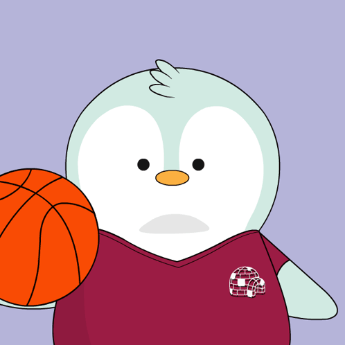

Penguin to Penguin Communication
Penguins are highly social animals that communicate through a range of sounds and body language. They make loud calls to find their mates and chicks in large colonies, and they also use eye contact and bowing as part of their greetings.
Penguins have unique voices that help them recognize each other even in crowded colonies!
Communicating with Other Species
Penguins are not just communicative with their own kind. They also make warning sounds when predators are nearby. If a penguin senses danger, it might squawk to alert its fellow penguins and other nearby animals.
While penguins don't usually "talk" to other species directly, their body language and alertness can send signals to others about their environment.

Fun Penguin Facts
Did you know? Penguins can "sing" to their partners and chicks to find them in the crowd, even from far away. And baby penguins, called chicks, can make adorable peeping sounds to call their parents!
